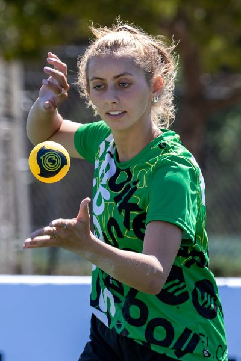
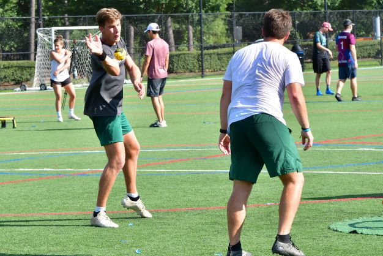

So you want to learn how to cut serve?
A cut serve is used to make the ball jump off the net and go wider than a normal serve because of the spin that is applied to the ball. Lets learn cut in 3 easy steps.
-
Start by standing at the serve line and throwing the ball onto the net while twisting your throwing hand towards your body
- This helps your body learn the motion of adding the cut spin on the ball.
- Throw the ball up and practice catching the ball while turning your wrist over top of the ball.
-
Practice serving pretending that you are pushing the ball with your hand instead of smacking the ball.
- the more time that the ball is touching your serving hand the more spin you can apply to it. This is why the pushing motion is widely used for generating cut.

